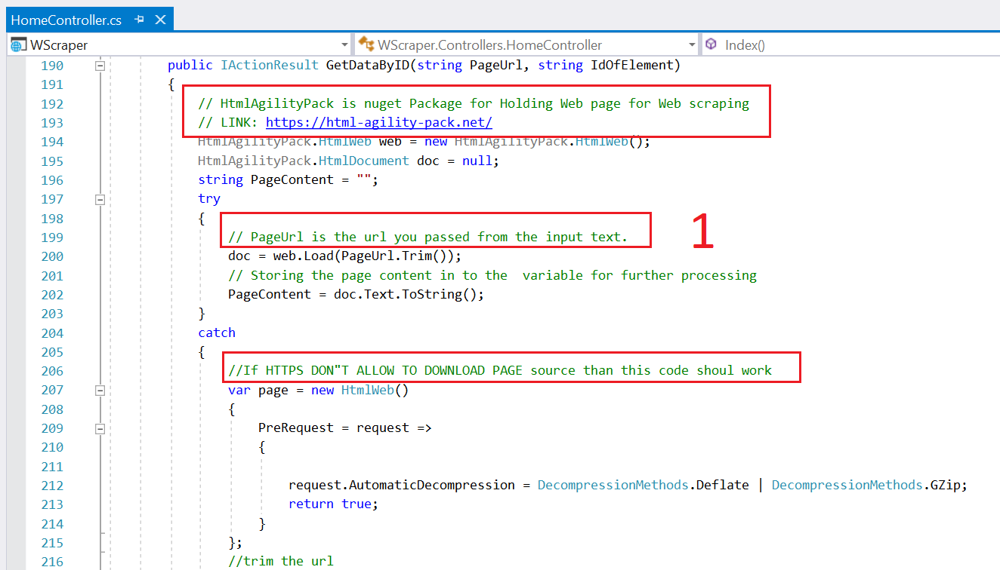
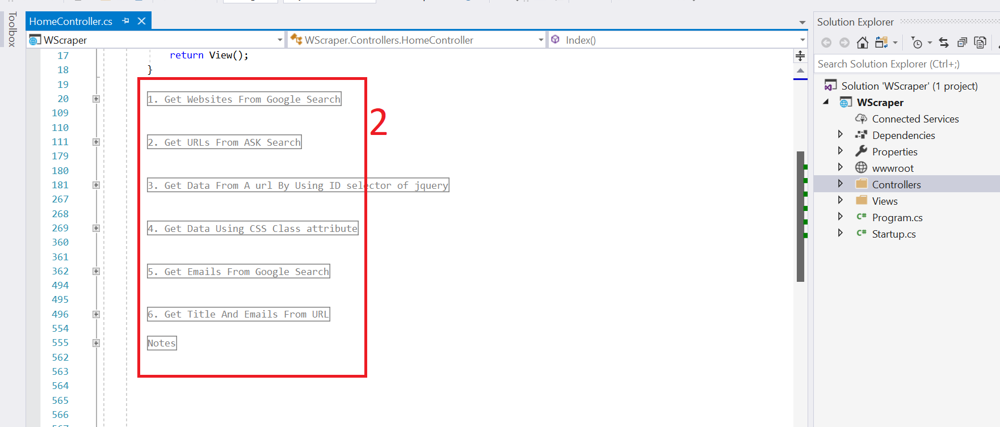
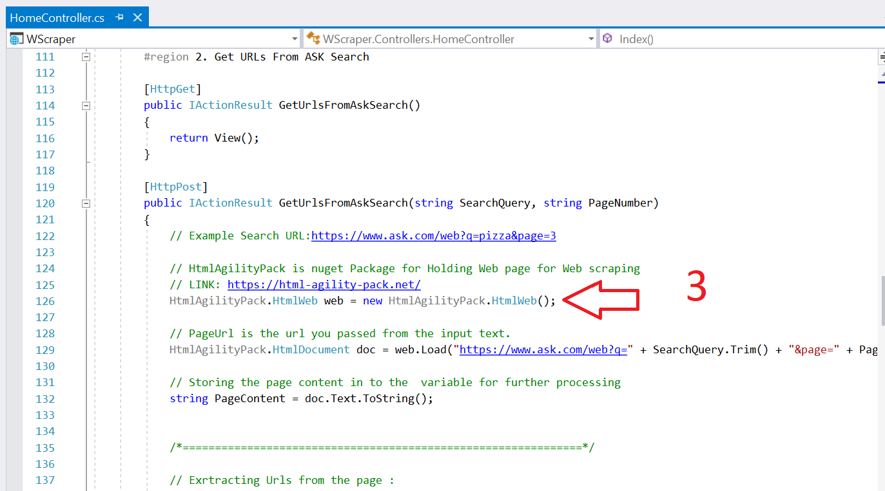

Thank you for purchasing my web application. If you have any questions that are beyond the scope of this help file, please feel free to email via my user page contact form here. Thanks so much!
Web Scrapper let's you extract information in a quick and easy way.
It also automate the process and reduce human errors while extracting data.
There are lots of features of this application, few of them are given below.
You can extract website list for a specfic query
You can extract items related to a perticular class
Extract list of urls for a specific query from ask or google search engines.
Get text attached to a specific ID on a web page
Find Title of the page
Find emails for a specific keyword from google search engine.
you can extend this code to any extend as per your logic
We have made video tutorials here for explaining each section and feature of the script.
We have provide commets in the code to make you understand each line of code, so you can cutomize it easily.
Below is the way we used comments. We write the code which have lots of green line comments which will let you know why we used these lines.

Also , note we made sections which will separate all six code blocks which will help you understand the source code.

WE have used https://www.nuget.org/packages/HtmlAgilityPack/ nuget package to get the page souce for analysis, but you can also use HTmlWeb (as we used in our 2nd example) or your logic. Also not Some websites will not allow data extraction / web scraping so this will not work for those websites or you need to make some custom code changes.

When you unzipp the web application you will get two folders :
SourceCode: This is the full source code than you can use and modify it as per your need.
Technology Stack :
- ASP.NET Core 2.2
- C# Programming Language
- MVC Code Structure.
Documentation: these are the files which you need information about webscraper.
We have explained the usage of the script using video tutorial in a very easy manner.
Below is our you tube channel link which contains tutorials about how to use this application with voice commands. Click here for our youtube channel.
If above video doesn't work Click here to see it.
We have also provided lots of comments in source code to make you understand the concepts easily.
We will review this item / script periodically and will fix bugs and update it as much as possible.
Aslo you can send us the recommendations if you like.
You can ask any question related to it using our project page and aslo send us email as mentioned above. Also note we can customize it as per your requerement. Use this link for asking questions or need suport.
Once again, thank you so much for purchasing this web application. As I said at the beginning, I'd be glad to help you if you have any questions relating to this theme. No guarantees, but I'll do my best to assist. If you have a more general question , you might consider visiting the forums and asking your question in the "Item Discussion" section.